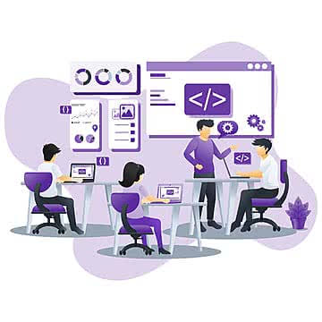
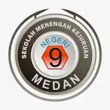
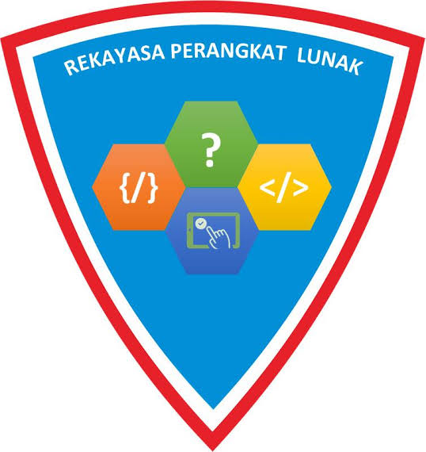
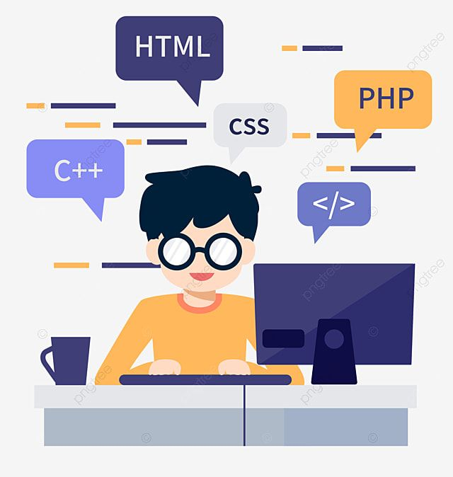
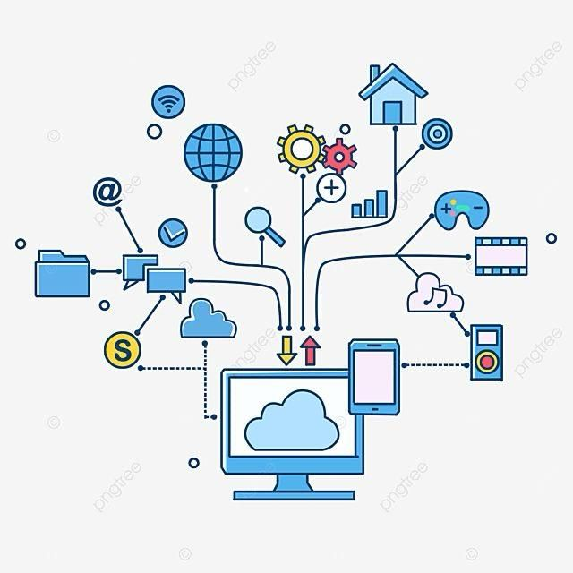

Pemrograman
Belajar membuat aplikasi dan website.

Rekayasa Perangkat Lunak
Mengenal dunia teknologi, pemrograman, desain, dan jaringan komputer bersama jurusan Rekayasa Perangkat Lunak.
Jelajahi Sekarang
Rekayasa Perangkat Lunak merupakan bidang keahlian yang mempelajari proses pengembangan perangkat lunak, mulai dari perencanaan, desain, pemrograman hingga pengujian aplikasi.
Siswa RPL dibekali kemampuan untuk memahami teknologi, menyelesaikan permasalahan, mengembangkan aplikasi dan menciptakan solusi digital.
Berbagai kemampuan yang dikembangkan dalam pembelajaran.
Memahami algoritma dan cara berpikir sistematis.
Membuat website menggunakan HTML, CSS dan JavaScript.
Mengelola data menggunakan sistem database.
Membuat tampilan aplikasi yang menarik dan mudah digunakan.
Klik gambar atau tombol untuk melihat informasi lengkap.

Belajar membuat aplikasi dan website.

Mengembangkan kreativitas digital.

Mengenal jaringan dan koneksi komputer.
Contoh pengembangan proyek dalam bidang teknologi.

Sistem peminjaman alat laboratorium berbasis QR Code.

Platform ujian berbasis komputer yang responsif.

Etalase digital untuk menampilkan produk siswa.
Dokumentasi kegiatan pembelajaran dan kreativitas siswa.
Pilih informasi untuk mengetahui lebih lanjut.
Informasi kegiatan praktik laboratorium.
Materi belajar untuk siswa RPL.
Informasi praktik kerja lapangan siswa.
Informasi persiapan uji kompetensi.